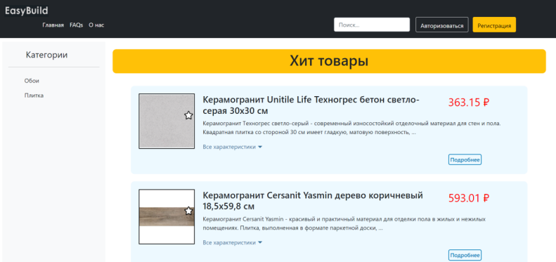
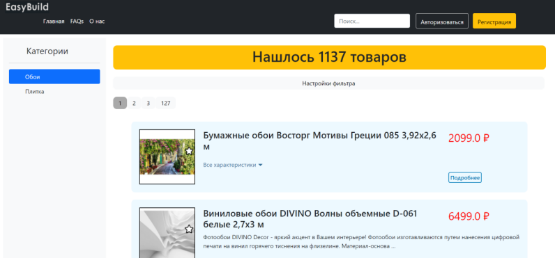
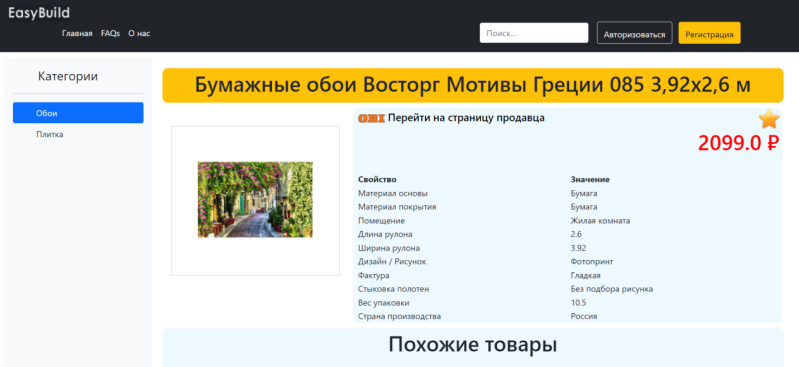

-
Источник
Разработка проекта осуществлялась в пределах дисциплины "Проектная деятельность" на 3 курсе бакалавриата (вторая половина 2021 года). Строгих требований и ограничений к выполняемой работе не предъявлялось. Главное, чтобы проект соответствовал теме "Большие данные".Тема "Агрегатор строительных материалов" была выбрана исходя из навыков и личных пожеланий участников команды. -
Цель и задачи
Цель проекта заключалась в создании площадки для удобного и эффективного выбора строительных материалов с интернет-магазинов OBI и "Петрович".Задачи:
— создание платформы для сбора информации о товарах
— создание сайта, взаимодействующего с обрабатываемой информацией. -
Личный вклад
— Доработка парсера (автоматического сборщика данных) с сайта OBI и создание роутера для единого перечня названий для сайта OBI;
— Добавление нумерации страниц. -
Инструменты
Язык программирования Python
Фреймворк Django
Trello (назначение задач участникам команды и отслеживание прогресса) -
Результат
В результате выполнения проекта была спроектирована информационная система учёта цен на рынке отделочных материалов.
Данная информационная система позволяет решить следующие задачи:
- сбор и сохранение данных о строительных материалах в системе;
- поиск материалов по задаваемым параметрам. -
Перейти на страницу с листингом кода (ссылка)
-
Описание
Проект предназначен для сбора информации о строительных материалах с различных торговых площадок, для более удобного и эффективного выбора пользователем. В каталоге присутствуют данные о таких товарных группах как обои и плитка следующих магазинов: Leroy Merlin, OBI и Петрович. Приложение созадавось как легко маштабируемый проект, поэтому для добавления новой информации (товарных групп, магазинов) не потребуется большого количесва времении трудозатрат. Единственное, что необхомо сделать - написать парсер и добавить данные о нем в БД.Приложение не просто агрегирует информацию в одном месте, но и может хранить историю изменения товаров, например, оно собирает информацию об истории цен на товар, благодаря чему через некоторое время (как только накопится достатоное количество информации) можно будет проводить аналитические исследования рынка.Основными страницами сайта являются главная страница, страница категории и страница самого товара. На главной страницы предсталены товары "Хиты продаж" (изображение ниже).С правой стороны пользователь может выбрать категорию интересующего его стройматериала, после чего перейдёт на страницу категории, на которой в верхней части, нажав на кнопку "Настройки фильтра", сможет настроить нужные критерии. Страница категории товара расположена ниже.Страница товара располагает более подробной информацией о свойствах материала, что можно видеть на изображении ниже.Моя задача в данном проекте заключалась в устранении ошибок в чтении данных с сайта магазина OBI, а также в добавлении на сайт нумерации страниц таким образом, чтобы данные настроенного фильтра оставались корректными.К сожалению, на сегодняшний день попасть на сайт-агрегатор строительных материалов не представляется возможным, так как проект был выложен на сервере университета, данные на котором довольно часто удаляются ввиду ограниченных возможностей университета и большого количества работающих на сервере студентов.